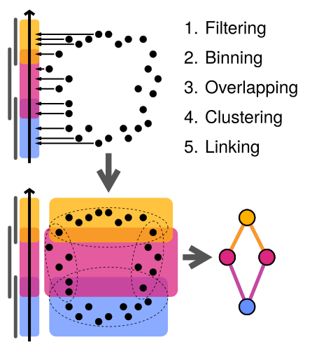
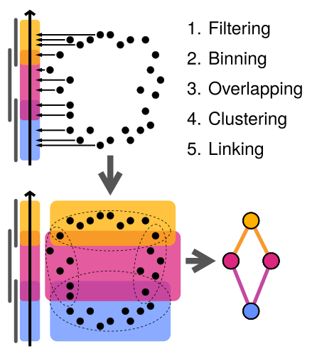

Model sub-cellular transcript patterns with topology

Python, preprint, and videos
bit.ly/mcarto [QR below]
Model sub-cellular transcript patterns with topology

Python, preprint, and videos
bit.ly/mcarto [QR below]
 Erik Amézquita1,2
eah4d @ missouri.edu
Erik Amézquita1,2
eah4d @ missouri.edu
1. Division of Plant Sciences & Technology, University of Missouri, Columbia, MO
2. Department of Mathematics, University of Missouri, Columbia, MO
3. Complex Biosystems Program, University of Nebraska, Lincoln, NE
4. Resolve Biosciences GmbH, Monheim am Rhein, Germany
5. Vision Science group, University of California, Berkeley, CA


This research was supported by National Institute of General Medical Sciences - Centers of Biomedical Research Excellence (COBRE) grant number P20GM125508.